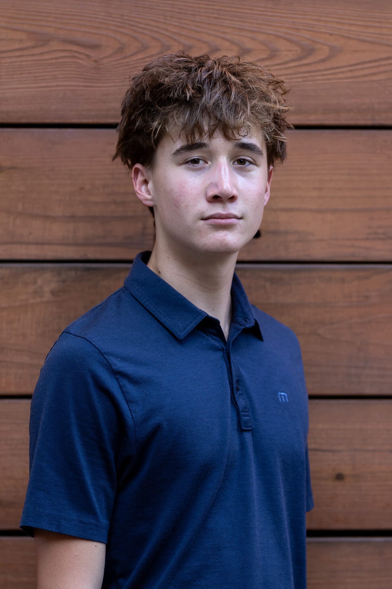

Hi, I'm Owen, a sports photographer and photojournalist based in San Jose, CA. I lead coverage as Editor-in-Chief for the Willow Glen High School Ram Pages while taking on freelance sports and media assignments throughout the Bay Area.
I regularly work with local athletic programs, club teams, and individual athletes for game coverage, individual athlete packages, and team media days. I run a fast workflow to deliver fully edited, high-res galleries within 24 to 48 hours.
I am always open to new freelance opportunities. If you're interested in booking coverage or setting up a shoot, use the contact form below.